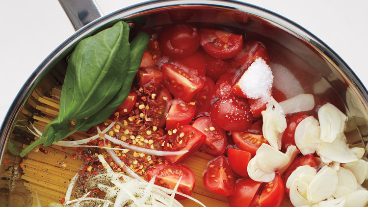

One-pot pasta is a quick and delicious meal with minimal clean-up!
Ingredients
2 tablespoons olive oil
1 cup chopped onion
6 garlic cloves
14 ounces diced tomatoes (fresh)
2 cups chicken broth
1 tablespoon chopped basil
8 ounces dry spaghetti
1/4 teaspoon kosher salt (or to taste)
One fourth teaspoon kosher salt (or to taste)
1/4 cup shredded Parmesan cheese
One fourth cup shredded Parmesan cheese
Instructions
Heat oil in a wide skillet, pan, or pot over medium heat. Add the onion and garlic, and then sauté 3 minutes until they start to brown.
Add the tomatoes, chicken broth, basil, and spaghetti. Ensure the spaghetti is submerged in the liquid.
Cover the skillet, pan, or pot with a lid and reduce the heat to medium-low.
Cook for 8 minutes or until the pasta is al dente. (If the pasta is not cooked after 8 minutes, add a little more chicken broth. Then cover the lid and cook for an additional 1 to 2 minutes.)
Uncover the lid and add the salt. Then turn off the heat.
Top the pasta with the Parmesan cheese and parsley. Serve immediately.